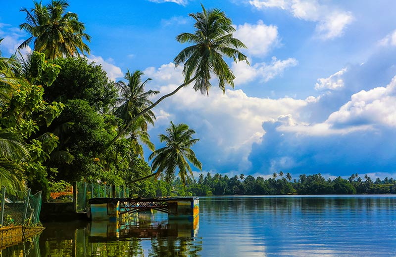
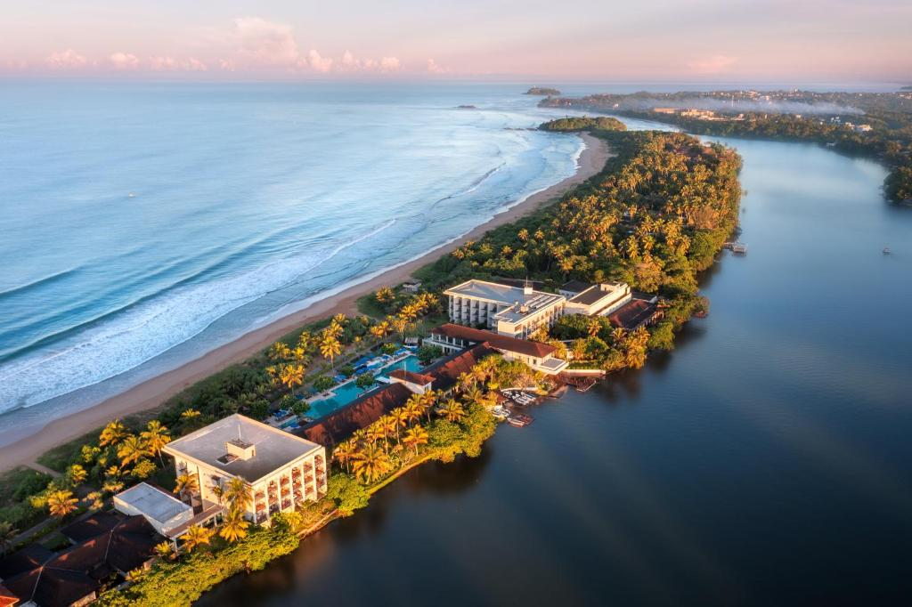

Bentota is known for golden beaches, river adventures, and water sports. It is perfect for travelers who want both relaxation and activity on Sri Lanka's southwest coast.
Highlights & Experiences
Water Sports: Jet skiing, banana rides, and wake activities.
Bentota River: Scenic river safaris through mangrove channels.
Beach Resorts: Relaxed beachfront stays and sunset dining.


Quick Facts for Travelers
Best Time: November to April.
Tip: Combine beach day with afternoon river safari.
Main Highlight: Top water-sports destination in Sri Lanka.